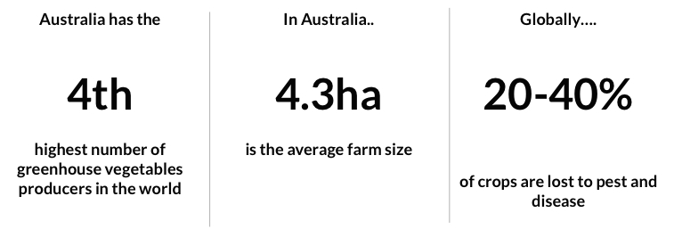
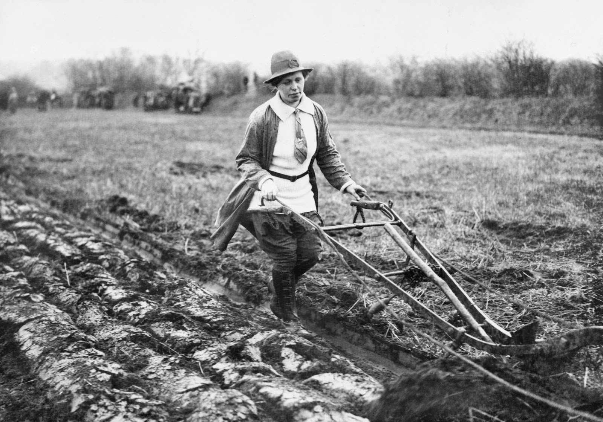
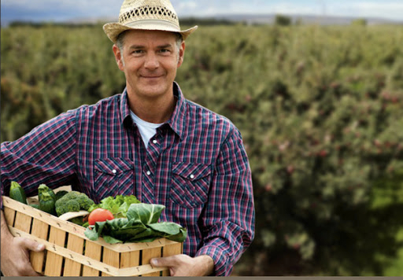
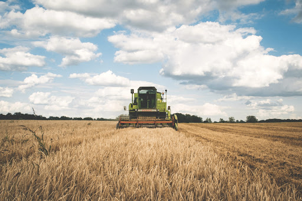
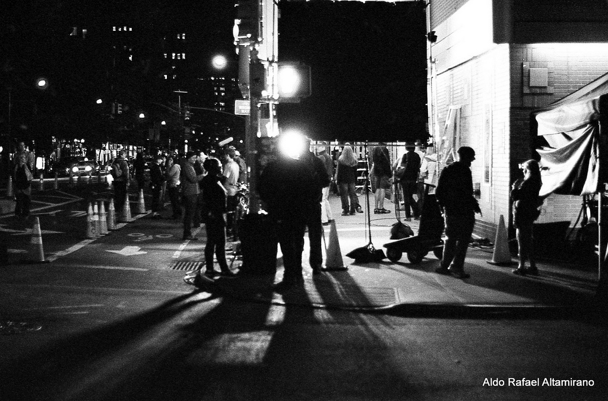
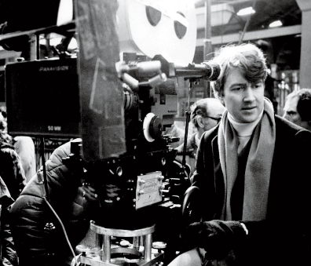

FarmApp
Brief
FarmApp is an end to end solution for Integrated Pest Management (IPM). It’s a software based solution designed to assist farmers with crop management which in turn allows for better forecasting and decision making. As a new business they needed some help on two main areas;
- Attracting new customers.
- Better communicate their solution to potential clients, particularly via the website.
Research
What FarmApp said
The first step was to sit down with the FarmApp team and get as much information from them as posssible.
Some of the key challenges were;
-
Farmers often being time-poor.
-
Current sales method time-consuming
-
Some resistance to change & new tech (pride and tradition).
Some resistance to share data / info with others.
-
Competition from pesticide companies -(scouting & agronomy).
-
Higher cost of labour in Aust (scouting).
-
Finding the types of farms that would be most receptive to FarmApp.

What the Stats said
Our next step was to do some general research on farming in order to better familliarize with the situation here and to better equip up for the our next step.
Here’s what we found out.

What the Farmers said
Unable to get in contact with FarmApps current users, we spoke to ten farmers who were potential FarmApp customers.
They were;
-
Eight farmers in Australia, one in New Zealand and one in Taiwan.
-
Farms ranged from 5ha to 600ha.
-
Farming a variety of products
(grains, grapes, almonds, peas, potatoes, flowers, nursery plants, olives and organic vegetables)
Key Findings: Attitudes
- Farming is a labour of love or more pragmatic and profit
driven.
-
Range of attitudes around new technology:
- actively using
- curious, but not proactive
- wedded to tradition
- Two farms about to be handed over to the next generation
both indicated new tech was up to their sons.

Key Findings: Challenges
- All said TIME was precious
- Climate (drought)
- Water costs
- Uncertainty
- Profitability
- Barriers for new tech
- Time required to seek out & test new methods
- Poor Internet service
- Older generation having less patience and interest to
learn new technology

Key Findings: Info Sources and Methods
-
Common sources:
- neighbouring farmers and friends
- generational knowledge
- interest groups / associations
- sellers of products (though sceptical)
- media (particularly special-interest)
- FarmApp impression - “Farmers don’t like to share” doesn’t paint the full picture
- Generally willing to share information with each other, but some limits around WHAT they share

Synthesis and Ideation
Based on our research we were able to produce a flow of the Farmers Journey, the FarmApp Journey,
and develop a FarmApp Customer Journey.
Based on this we were able to come up with a Problem Statement/Hypothesis;
"FarmApp needs to respond to customer diversity more strategically to deliver the right message to the right person at the right time."
Solutions
Based on this hypothesis we developed a Customer Service Blueprint to help the team at FarmApp with a formalized approach to what needed to be done and by whom.
We also developed a new proposed Customer Customer Journey, broken down into specific areas so the team would know exactly where in the processs they are with every customer and what the next step should be. You can see this all broken down in the presentation below.
NOOMR
Brief
NOOMR is an availability and event scheduling platform designed specifically to connect producers and agencies with freelance service providers quickly and easily. When I joined NOOMR in early 2018 the business had already identified a problem and started the development of a technology they believed could solve it.
The problem they wanted to solve was around contacting multiple different independent contractors who all have very different schedules, and finding the best day to hold a production. The solution they came up with was a piece of software that allows you to interrogate and compared multiple calendars.
It was my job to;
- First validate their assumptions
- If successful drive the design of the platform going forward.
Research
My first step was to validate the problem. There’s no point in fleshing out a solution for a problem no one was having. To do this I contacted some production organizers to have a discussion about how they work and the problems they have had.
The producers told me;
On choosing crew
- There was a seemingly clear distinction between two groups of crew, the more creative and “important” vs the more just point and shoot types.
- On the more "creative" roles.
- People like Directors of Photography
- Are fewer in number
- Required interviewing, and more specific to the shoot type skill sets.
- Less likely to need replacements
- Needed to have a right cultural fit to work well with the rest of the team
- On the "less skilled"
- Made up of camera operators, sound people, gaffers, build, grips and jib
- Sometimes needed to bring own equipment, though not always which came with different rates
- Usually a recommendation was enough, little to no interviewing
- Have more predictable market rates.
- More often on short notice than others
- Cultural fit was less of an issue


On organising events
- Typically goes through this process, roughly;
- Receive request or bid
- Contact diary service to check availability of staff or staffing agency.
- Staffing agency will call around to see who’s available and at what rates, or already have access to a calendar.
- Diary service only checks if a specific person is available at a specific time by looking in their calendar.
- Give quote for the bid
- Bid approved
- Put crew on hold
- This is done by contacting the staffing agency or diary service.
- Budget gets approved
- Crew is locked in.
- Again this is done by contacting the staffing agency or diary service.
- this is often where replacements need to be found on short notice.
- Everyone did this on a laptop in an office
- Very rarely was this done in the field though if it was it was done on a mobile phone and only to find last minute replacements.
- Often they have at least a couple productions on the go at any one time
- Often they find it difficult to get a hold of a staffing agency or diary service on the weekends, which is when many productions take place.
Research Conclusions
As you can see from the above, it isn’t the most efficient process in the world. There is a lot of back and forth between the organizers and their various representatives. The main hurdle was checking and confirming availability of multiple contractors, especially with the “less skilled” crew members, and finding replacements easily and quickly.
The problem they identified was consistent with what I heard from the NOOMR team and the solution they came up with would go along way addressing a lot of the issues the organizers were having.
Synthesis and Ideation
The interviews taught us that the most important problem, and therefore the first to solve was around availability checking.
Having already made some inroads technically into a solution I needed to make use of what had been done already when coming up with solutions.
The technology being used for developing the platform converted back end Java code straight into Javascript (or so I understand) which had the benefit of a lot less code needing to be written increasing the speed in which things could get up and running, though this also meant that a lot of the UI components would already be pre designed.
With NOOMR being located in Sydney, and myself in Melbourne, I wasnt able to have any continued access to organizers for usability testing. However, as the problem I was solving didnt actually require any actual industry specific knowledge or skills, I was able to conduct tests with friends and family. Although not as ideal as I may have liked, their feedback and hangups did a lot to help with the various iterations I created.
Below you can see how the idea changed over time. The prcoess started off with basic sketches with changes made as more data was gathered and more tests were completed. One of the larger changes was making the availability checking a seperate entity from organizing events. This served the purpose of us devloping an MVP faster(which I will go into later), and was more consistent with the way organizers tend to work which involves a lot of one off searching and finding replacements in a more ad hoc fashion.
Solutions
After doing a lot of testing we developed an MVP which we have recently released to a small batch of users for a beta test. I've made some slides going through a basic linear progression which you can see below.
The goal of this beta period is first and foremost to provide a piece of software that we think users can gain value from straight away.
Through this process we are hoping to gain as much feedback as possible from all of our user base, both crew and organizers, in order to make sure we not only improve what we have, but help prioritize all of our future features and functions.
Some of the ideas we are currently considering are around messaging, sending/developing call sheets, refferals and reccomendations and payments systems. We also believe that this solution can be adopted to other industries that need to compare availability organize multiple independent contractors and employees.